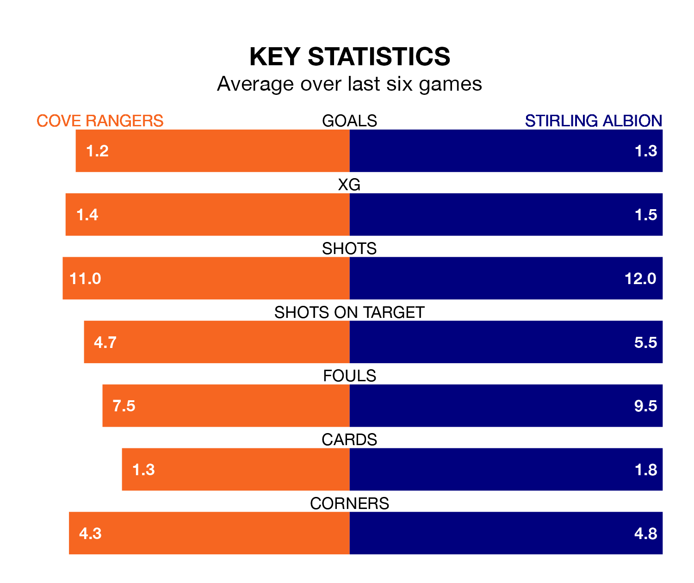

Two of League One's meanest defences go head-to-head at the Balmoral Stadium on Saturday, when Cove Rangers host Stirling Albion.
Only three sides – Falkirk, Hamilton Academical and Montrose – have conceded fewer goals than Cove to date: the home side have let in just 46 goals in 30 games.
The Binos have conceded the same number of goals in 30 games, giving them the joint-fourth tightest back line so far this season.
Key to the Wee Rangers' home form has been Nicholas Suman, who has allowed 1.44 goals past him per 90 minutes, compared to 1.43 for Blair Currie in the opposite net.
In Rumarn Burrell, Cove have one of the league's most on-form strikers so far this season. He has notched 19 goals in 30 appearances, to sit second in the scoring charts.
His goal rate of one every 136 minutes is much quicker than that of Dale Carrick, Stirling's top scorer with a goal every 272 minutes, and a total of eight goals in 28 games.
In the last 10 years, Cove and Stirling have played each other on eight occasions. Cove won five of them, Stirling one, and they drew twice.
On average, the Wee Rangers scored 2.6 goals and the Binos 1.2 in those matches.
Their last meeting was on February 3, when they played out a 2-2 draw.
Rangers are in mixed form in League One, with three wins and three losses from their last six games.
With two wins and two draws over that period, Albion's form is slightly worse – they have taken eight points from 18, compared to the Wee Rangers' nine.
The hosts are fifth in the table after 30 games, of which they have won 12 and drawn seven, earning 43 points.
The Binos are one place behind Cove in sixth, with nine wins and seven draws putting them on 34 points.
Cove's last match was on March 23, a 3-1 loss against Hamilton Academical, with Connor Scully getting the goal for the Wee Rangers.
Stirling beat Montrose 1-0 last time out, also on March 23.
Updated: 12:16 (UTC), 25/03/24